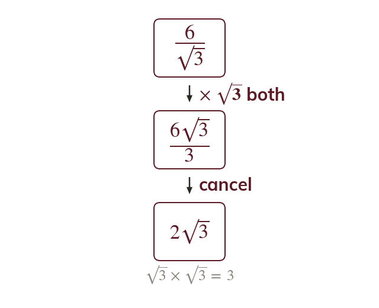
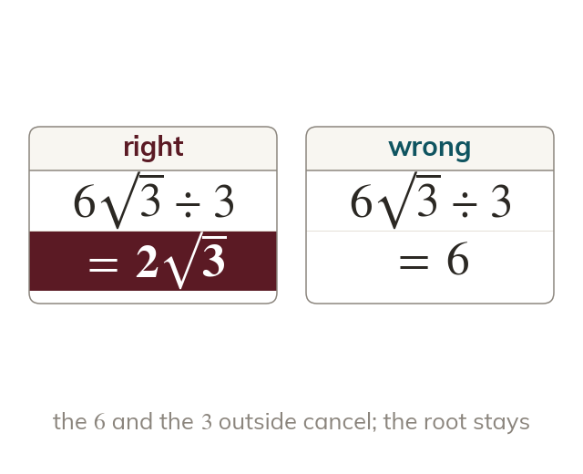
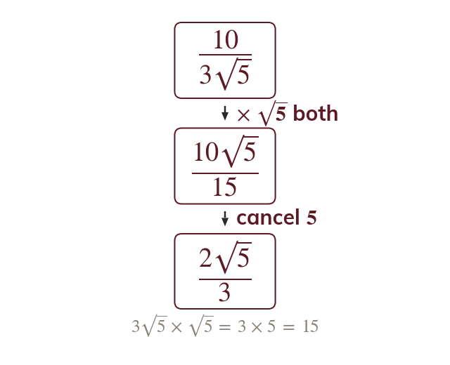
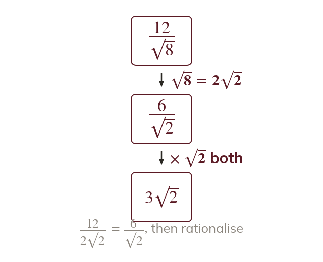

Same value, new form
Multiplying top and bottom by the same number keeps a fraction's value. Choosing clears the surd from the denominator.
A fraction with a surd below, such as is hard to estimate or to compare. Rationalising moves the surd to the top, where it is easy to work with.
Work down the page at your own pace. Write every answer in your book first, then click to check it.
Read each card, then follow the worked examples one step at a time.

Multiplying top and bottom by the same number keeps a fraction's value. Choosing clears the surd from the denominator.

After rationalising, whole numbers outside the roots may cancel. A number inside a root never cancels with one outside.
Pick an answer. If it's wrong, the feedback tells you which mistake it was.
Read each card, then follow the worked examples one step at a time.

For multiplying top and bottom by is enough. The denominator becomes a whole number.

A denominator such as simplifies to first. Then only needs clearing.
Pick an answer. If it's wrong, the feedback tells you which mistake it was.
Finished? Next lesson: 11H.1.4 Rationalising Harder Denominators.
For each skill, tap the one that is true for you today. Your Revise pages start with anything you mark Not yet.
Your ratings are saved on this device only.
Log in, then search for a code to practise that skill.
Videos, worksheets and more on each part of this lesson.